Formulario Inscripcion
MANUAL DE USUARIO
En este apartado mostraremos el formulario de "Inscripción", para el registro de los alumnos inscritos, antes de comenzar resaltaremos que el funcionamiento de algunas partes del formularios son las mismas para las demás.
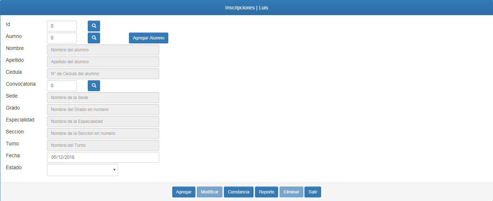
Este es el formulario de Inscripción, al igual que los demás formularios posee campos en los cuales se deben ingresar los datos, en cada campo se debe cargar un dato especifico el cual esta indicado dentro de los mismos, para tener en cuenta; en cada campo
solo se puede cargar un tipo de dato, es decir; hay campos en los que se pueden ingresar solo números o solo las letras sean estas
mayúsculas o minúsculas o en algunos casos ambas.
Existen campos que poseen un fondo gris, estos campos son conocidos como "de solo lectura" para poder realizar el ingreso de datos
en este tipo de campo se debe utilizar el botón "Buscar" el cual esta en la parte superior del formulario como muestra la figura siguiente
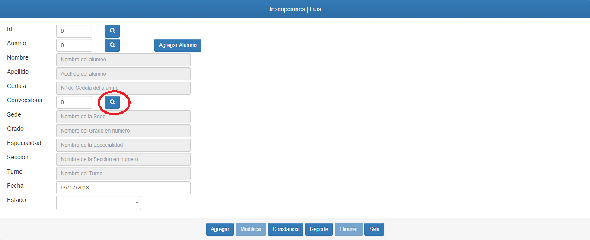
El botón "Buscar" sirve para buscar registros realizados, al presionar este botón nos enviará a un nuevo formulario donde se mostrarán los registros.
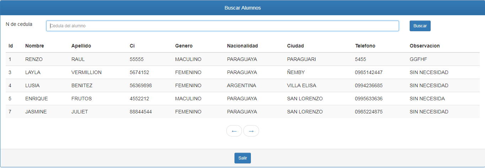
Este es el formulario de búsqueda, como hemos mencionado anteriormente aparecerán todos los registros hechos previamente, para poder recuperar
algún dato solo debemos presionar sobre ese registro.
También si hay varios registros en pantalla y queremos uno en especifico podemos usar la barra de búsqueda, solo debemos ingresar el dato
que se solicita y presionar el botón "Buscar", y filtrará y mostrará el registro solicitado. Por último el botón "Salir" al presionarlo nos devolverá al
formulario en el cual nos encontrábamos al empezar.
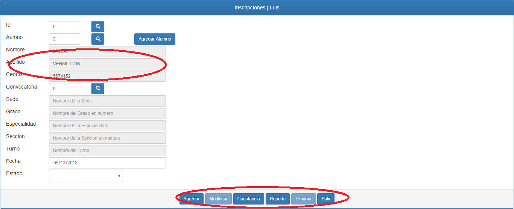
Esta es la forma en la que se presentaría una vez que el dato se ha recuperado.
En la sección de abajo de los formularios encontrará los botones de acción, los cuales son: Agregar, Modificar, Eliminar y Salir
Cada Uno de ellos realiza una función diferente, cuando es la primera vez que realizara la carga para un registro los botones
"Modificar" y "Eliminar" se deshabilitaran.
De la misma forma se pueden recuperar registros de las inscripciones, utilizando el botón de "Buscar" para el formulario Inscripción.
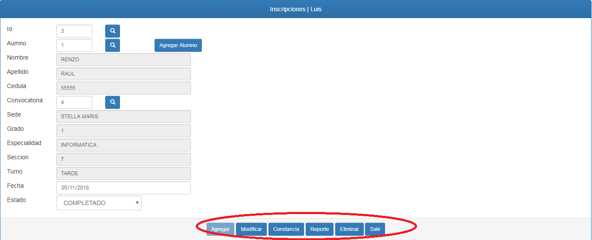
De esta manera queda el formulario una vez que un registro es recuperado, cuando se realiza esta acción el botón "Agregar" quedará
deshabilitado y se habilitarán los botones "Modificar" y "Eliminar".
El botón "Agregar" tiene la función de guardar los nuevos registros que se realicen.
El botón "Modificar" tiene la función de algún dato que se haya cambiado del registro, una vez que este se haya recuperado con el buscador
El botón "Eliminar" tiene la función de borrar un registro, una vez que esta se haya recuperado con el buscador.
El botón "Salir" tiene la función de regresarnos al "Menú Principal".
Ademas cabe mencionar que este formulario en particular cuanta con dos botones especiales el primero es le botón de
"Constancia", el cual permite generar una constancia de inscripción una vez se recupera el registro de inscripción del alumno.
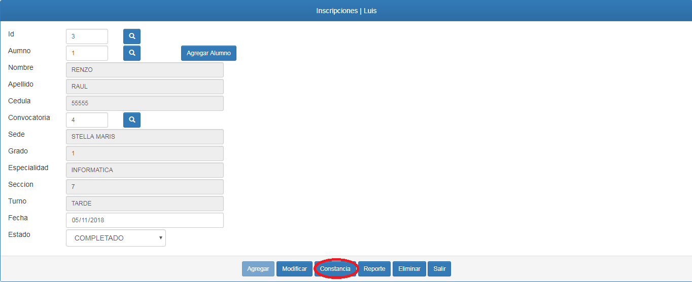
Al presionar este botón abrirá una nueva pestaña donde aparecerá la constancia generada para su impresión..
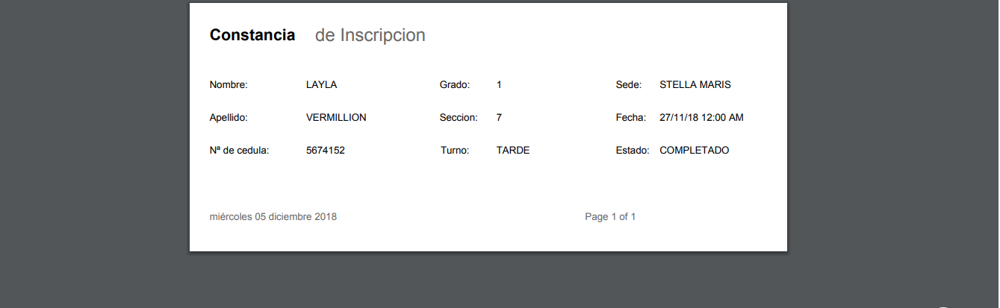
Dentro de este formulario podremos realizar el informe de Alumnos Inscritos, utilizando el botón de "Reporte".
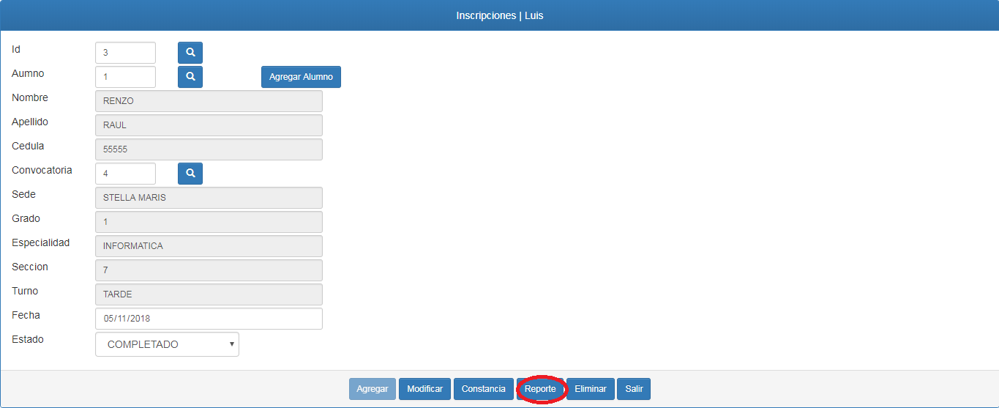
Esto nos enviara a un formulario exclusivo para la generación del reporte.
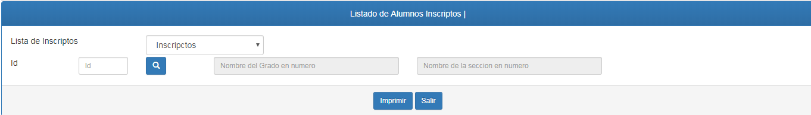
Al ingresar los valores solicitados y presionar el botón "Imprimir", se generará el reporte de alumnos inscritos en un curso especifico.
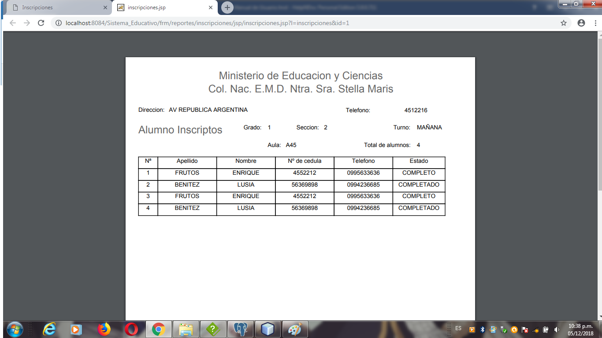
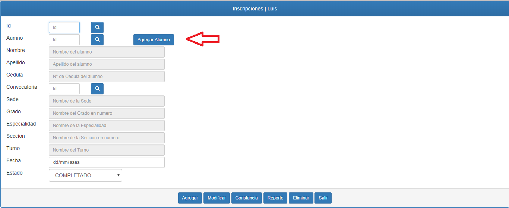
Por último debemos mencionar que en caso de que no podamos recuperar algún registro para los campos de solo lectura,
por que estos no existen, podemos utilizar los botones que se encuentran contiguos a dichos campos, al presionarlos nos enviara
a unos formularios específicos del tipo de dato, para poder realizar el registro correspondiente.
Created with the Personal Edition of HelpNDoc: Easily create Qt Help files